From my audit of round 28: the page values hugged the left edge of the right card, while the temperature card is centered, so the two cards read
unbalanced. The page arrows also sat outside the card, one past the card edge. Every shot passes the margin check (capture.js: 14 shots).
The shots use ticks B (round 26, locked) and gear B (round 25, the recommended open pick).
No new pick. Ticks B is locked (round 26). Still open: gear A or B (round 25).
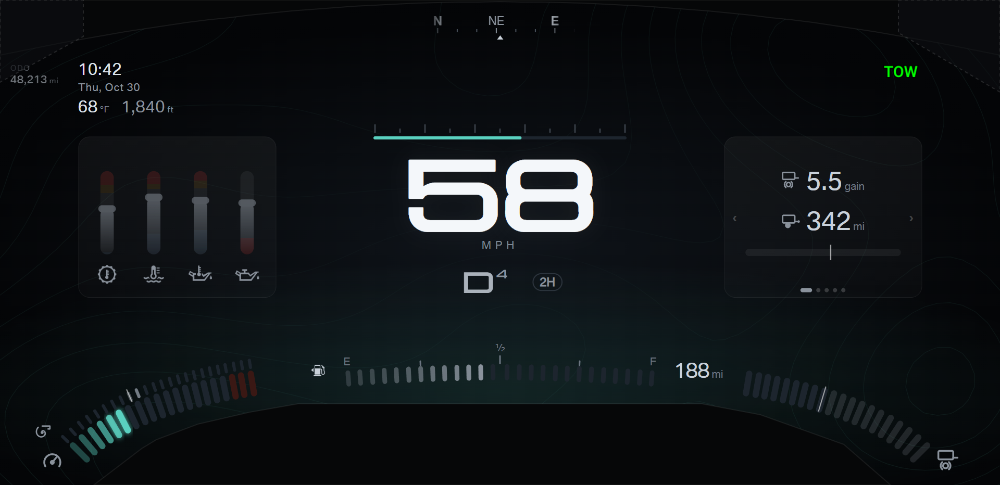
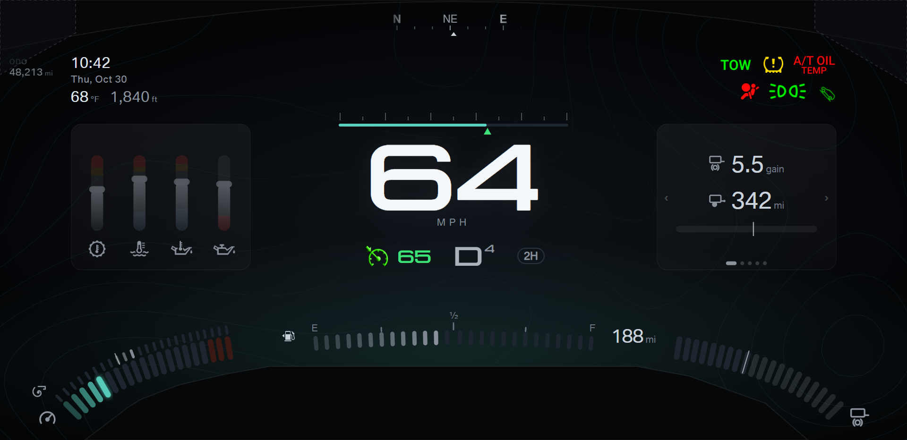
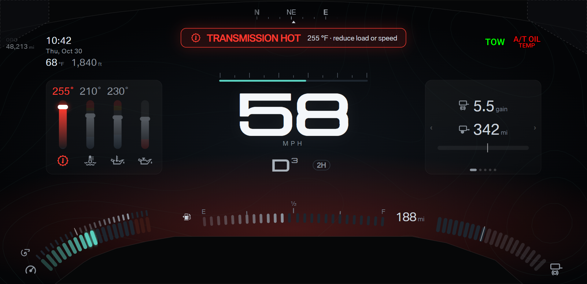
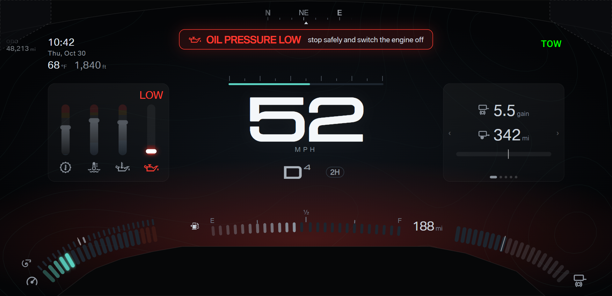
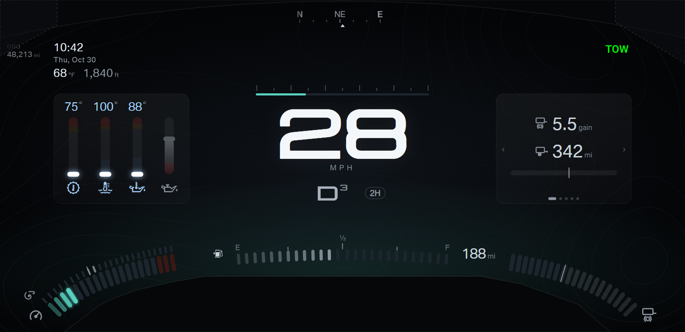
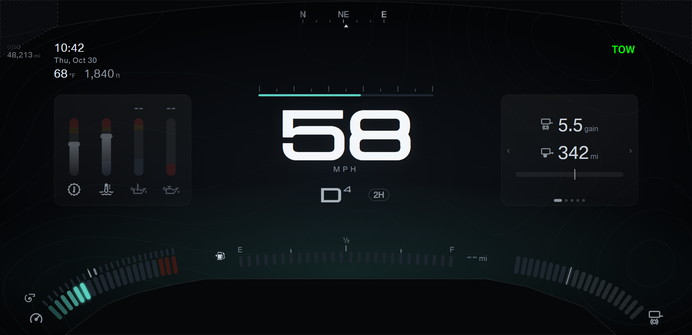
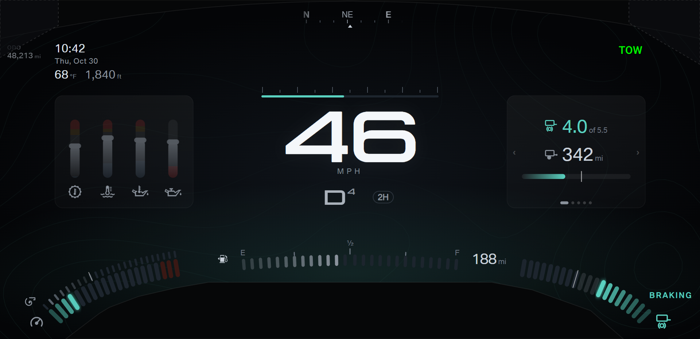
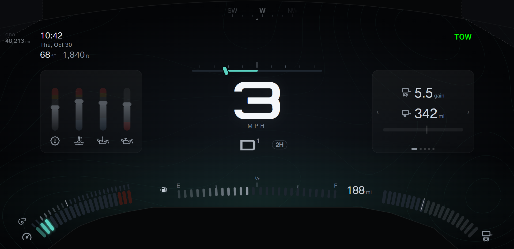
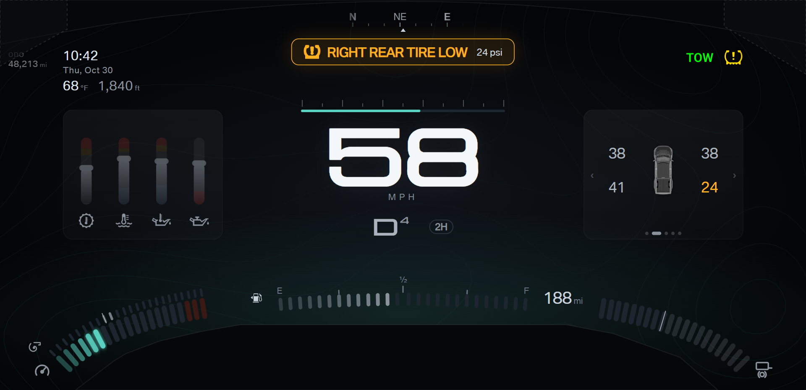
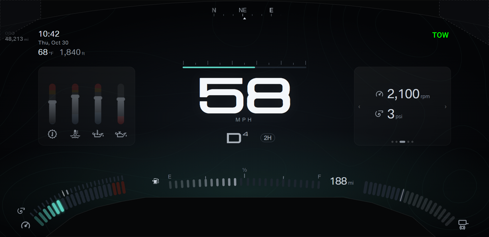
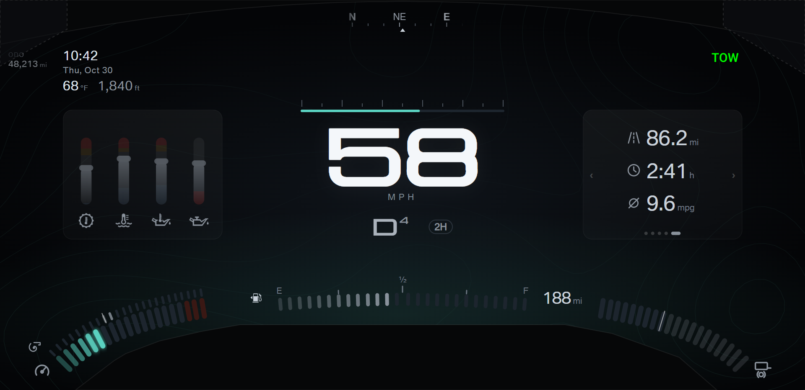
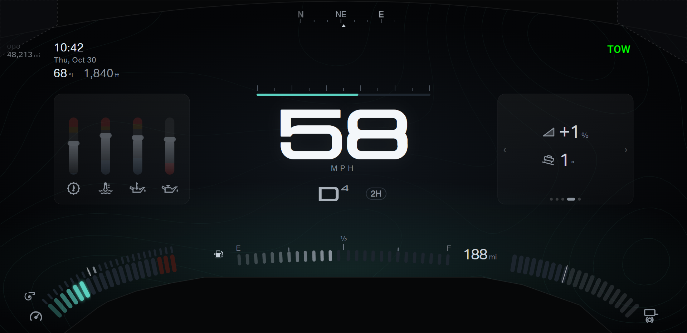
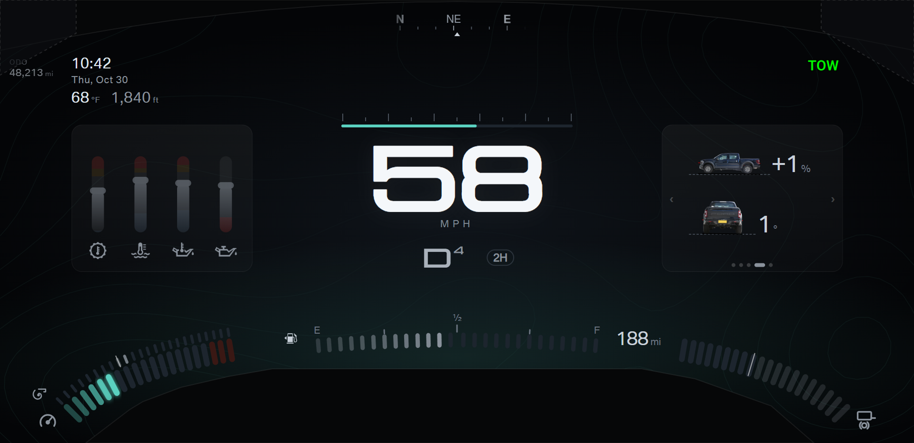